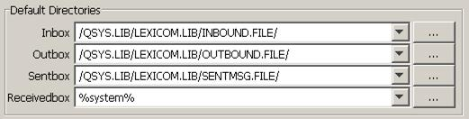
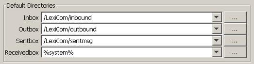

| AS2 Checklist / AS/400 PC Network Access Setup | |
The next step is to link the INBOUND and OUTBOUND (and optionally the SENTBOX) files that were created in the previous section with the "Inbox", "Outbox" and "Sentbox" in VersaLex. To do this, on the General panel at the Host level, enter the "Inbox", "Outbox" and optionally "Sentbox" entries, as shown below:
NFS Access Example

IFS Access Example
